Створення мапи
[ Download PDF
A4
Letter ]
Часто виникає потреба створити мапу, придатну для друку чи публікації. Для цієї задачі в QGIS є потужний інструмент під назвою Print Composer, що дозволяє пакувати ваші шари ГІС для створення мапи.
Огляд завдання
В цьому уроці ви дізнаєтесь, як створити мапу Японії зі стандартними елементами: вставною мапою, сіткою, вказівником півночі, шкалою та позначками.
Отримання даних
Ми будемо використовувати набір даних Natural Earth, а саме — Natural Earth Quick Start Kit, що містить набір чудово оформлених глобальних шарів, які можна завантажувати безпосередньо в QGIS.
Завантажити Natural Earth Quickstart Kit.
Джерело даних [NATURALEARTH]
Виконання
Завантажте та витягніть дані Natural Earth Quick Start Kit з архіву. Запустіть QGIS. Натисніть .

Перейдіть в директорію з витягнутими даними Natural Earth. Ви маєте побачити файл з назвою Natural_Earth_quick_start_for_QGIS.qgs. Це файл проекту, що містить оформлені шари у форматі документів QGIS. Клацніть Open.

Ви побачите перелік шарів у таблиці ліворуч, і оформлену мапу світу в робочому полі QGIS. Якщо ви бачите сповіщення про помилку у верхній частині поля, клацніть по хрестику, щоб прибрати його.
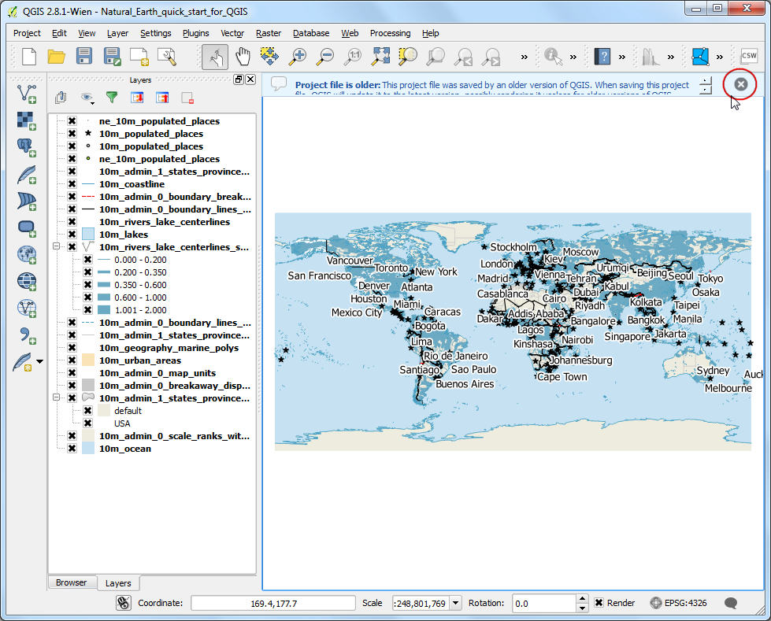
На цьому уроці ми оформимо мапу Японії. Натисніть кнопку Zoom In, та обведіть прямокутник довкола Японії, щоб збільшити цю ділянку.

Ви можете вимкнути шари даних, що не будуть використовуватись у цій мапі. Для цього зніміть прапорці біля шарів 10m_geography_marine_polys та 10m_admin_0_map_units. Перед створенням придатної для друку мапи, необхідно визначитись із проекцією. Наш набір даних подано у Geographic Coordinate System (GCS), де одиницями виміру є градуси. Але це не підходить для мап, в яких для виміру відстаней потрібно користуватись кілометрами або милями. Ми маємо взяти координатну систему проекцій, яка зменшить спотворення потрібної нам області, і буде мати одиниці виміру у метрах. Universal Transverse Mercator (UTM) є гарним вибором для наших цілей. Вона є глобальною, і тому підійде у більшості випадків. Залишається вибрати відповідну зону UTM, яка містить потрібну нам ділянку — це необхідно зробити для зменшення викривлень (дисторсії). У нашому випадку ми виберемо зону UTM 54N. Натисніть кнопку CRS Status у правому нижньому куті вікна QGIS.
Примітка
Для Японії розроблено координатну систему Japan Plane Rectangular CS (частина системи CRS — coordinate reference system), яка дає найменше спотворень. Вона розділена на 18 ділянок, і якщо ви працюєте з маленькою зоною в Японії — ця CRS підходить якнайкраще.

Поставте прапорець Enable on-the-fly CRS Transformation. У пошуковому рядку Filter введіть Tokyo utm zone54n. У знайденому виберіть Tokyo / UTM Zone 54N - EPSG:3095. Клацніть Apply.
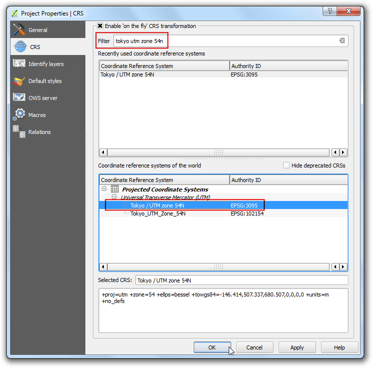
Тепер ми можемо розпочати збирання нашої мапи. Перейдіть до (Ctrl+P).
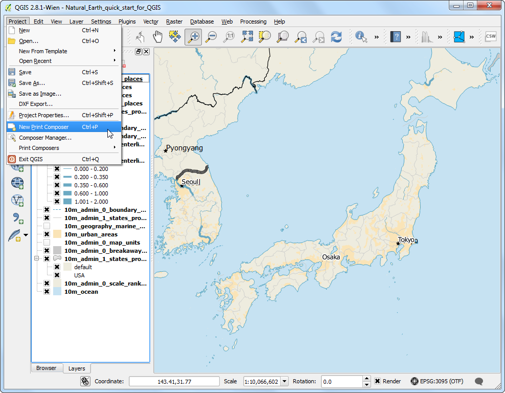
Вам запропонують ввести назву нашої збірки. Можете залишити поле пустим і натиснути Ok.
Примітка
Якщо ви залишили поле назви пустим, буде вжито назву за умовчанням на кшталт Composer 1.
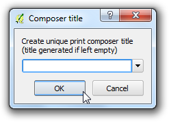
У вікні Print Composer клацніть по Zoom full для відображення всієї збірки. Тепер ми маємо перенести вид мапи з робочого поля QGIS до вікна Print Composer. Перейдіть до .
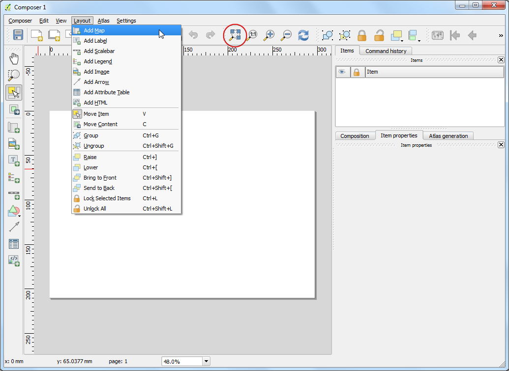
Після натиснення кнопки Add Map, затисніть ліву кнопку миші і намалюйте прямокутник там, де ви хочете вставити мапу.
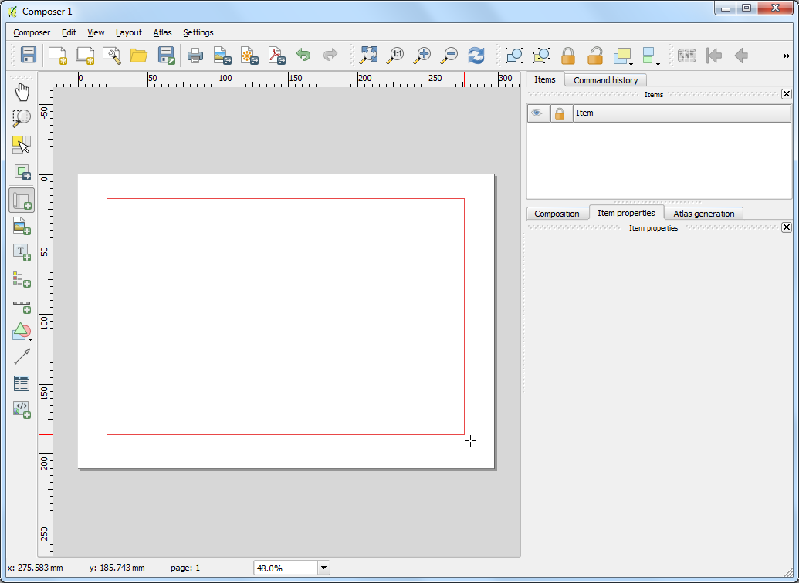
Ви побачите, що в прямокутнику відрисувалась мапа з робочого поля QGIS. Але вона не завжди відображає всю потрібну нам область. Виберіть (C) для переміщення мапи у вікні, або (V) для зміни меж вставки у вікні збірки.

Давайте настроїмо рівень масштабування для нашої мапи. У закладці Item Properties, введіть значення 7000000 до Scale.

Тепер ми додамо вставну мапу, в якій покажемо Токіо у збільшеному масштабі. Перш ніж вносити будь-які зміни у шари в робочому полі QGIS, поставте прапорці Lock layers for map item та Lock layer styles for map item. Це забезпечить незмінність вигляду, навіть якщо ми вимкнемо деякі шари, або змінимо їх стилі.

Перейдіть у головне вікно QGIS. Скористайтесь кнопкою Zoom In для наближення ділянки біля Токіо.

З’являться деякі дубльовані позначки з шару ne_10m_populated_places. Ви можете вимкнути цей шар для цього виду.

Тепер ми готові додавати вставну мапу. Перейдіть у вікно Print Composer. Виберіть .
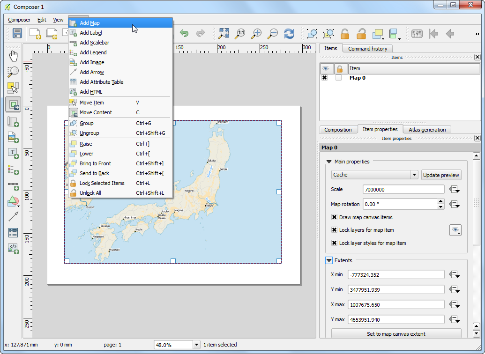
Протягніть прямокутник там, де ви хочете додати вставну мапу. Тепер у вас дві мапи у вікні збірки. При внесенні змін переконайтесь, що вибрали потрібну мапу. Виберіть об’єкт Map 1, який ми тільки що додали, у закладці Items. Перейдіть до закладки Item properties. Прокрутіть вниз до рядка Frame, і поставте прапорець біля нього. Ви можете змінювати колір та товщину обведення, для того щоб краще вирізнити вставну мапу на тлі основної.

Зручною функцією вікна збірки є автоматичне підсвічування площі основної мапи, яка представлена у вашій вставці. Виберіть Map 0 у закладці Items. В закладці Item properties прокрутіть вниз до секції Overviews. Натисніть кнопку Add a new overview.

Виберіть Map 1 у Map Frame. У вікні збірки на мапі Map 0 має підсвітитись площа вставної мапи``Map 1``.

Тепер, коли ми створили вставну мапу, додамо сітку та смугасту обводку до основної мапи. Виберіть об’єкт Map 0 на закладці Items. У закладці Item properties прокрутіть вниз до секції Grids. Натисніть кнопку Add a new grid.

За умовчанням, сітка використовує ті ж одиниці виміру, що й вибрана картографічна проекція. Та все ж, часто потрібно відобразити сітку у градусах. Ми можемо вибрати іншу CRS для сітки. Натисніть кнопку change... праворуч від CRS.
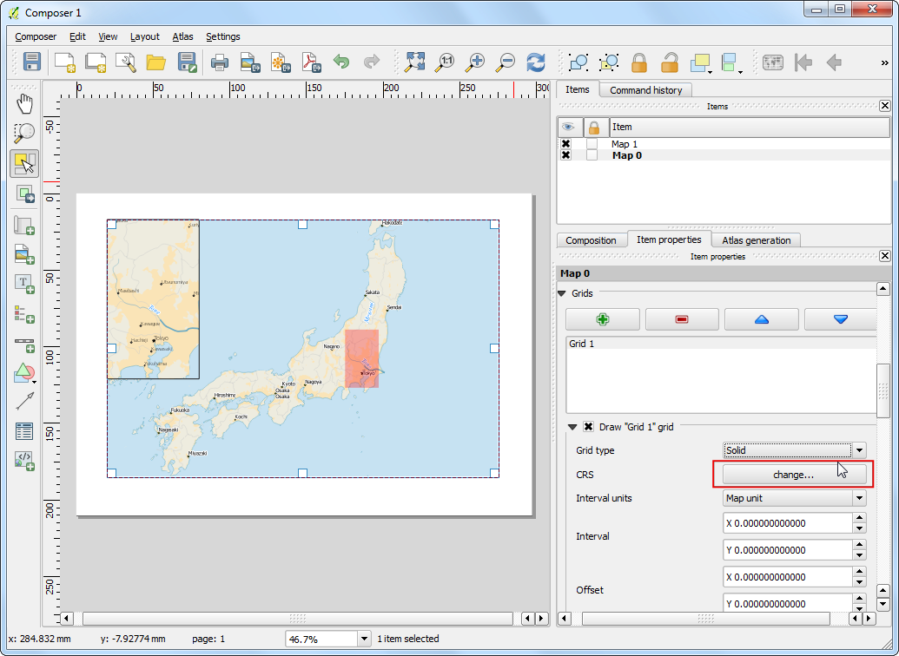
В діалоговому вікні Coordinate Reference System Selector введіть у поле пошуку 4326. В результатах виберіть WGS 84 EPSG:4326 як потрібну CRS. Натисніть OK.
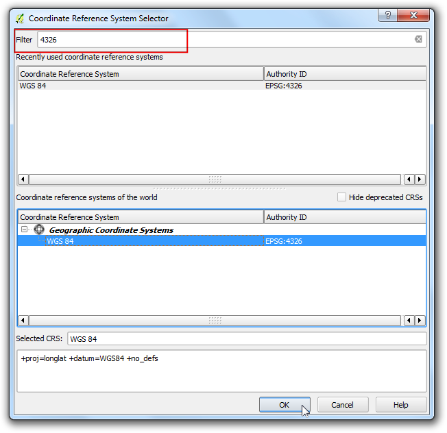
Введіть 5 градусів як значення проміжків Interval в обох напрямках: X та Y. Також можна використовувати Offset для зміщення ліній сітки.
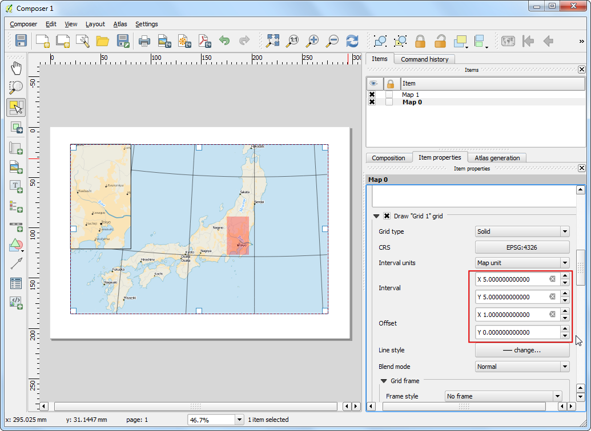
Прокрутіть вниз до розділу Grid frame, та виберіть вигляд рамки, який вам найбільше подобається. Також поставте прапорець біля Draw coordinates.
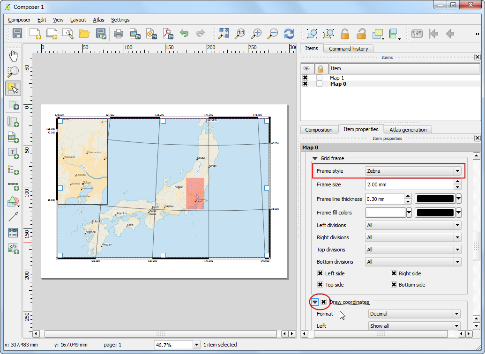
Відрегулюйте відстань координат до рамки у полі Distance to map frame. Змініть значення поля Coordinate precision на 1 для відображення координат з точністю до одного знаку після коми.

Тепер ми додамо на мапу вказівник півночі. Вікно збірки має чудову добірку зображень для мап, включно з великою кількістю вказівників. Натисніть .
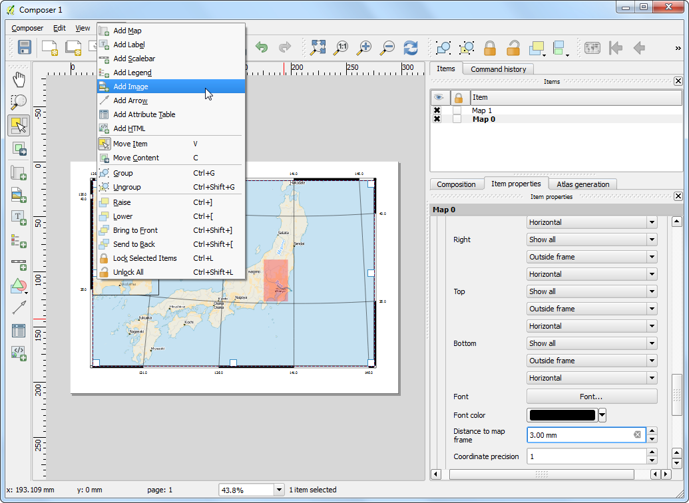
Затисніть ліву кнопку миші, і намалюйте прямокутник у верхньому правому куті поля мапи. У правій панелі виберіть закладку Item Properties, розкрийте розділ Search directories і виберіть вказівник півночі, який вам подобається найбільше.

Тепер ми додамо масштабну лінійку. Натисніть .

Клацніть там, де ви хочете додати мірило. У закладці Item Properties переконайтесь, що ви вибрали правильний елемент мапи, для якої потрібно показати масштабну лінійку. У розділі Segments ви можете настроїти кількість сегментів та їх розмір.

Саме час підписати нашу мапу. Натисніть .

Клацніть на мапі і намалюйте прямокутник, в якому має розміщуватись підпис. У закладці Item Properties розкрийте розділ Label і введіть текст, як показано нижче. Також можна ввести текст у HTML. Поставте прапорець навпроти Render as Html для того, щоб програма могла розуміти теґи HTML.
<div align=center>
<h1>Map of Japan</h1>
</div>

Так само додайте ще один підпис із вихідними даними та назвою програми.
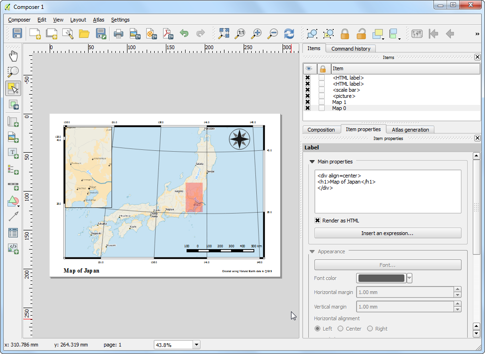
Якщо ви задоволені мапою, її можна експортувати як растрове зображення, PDF або SVG. В цьому уроці збережемо її як растрове зображення. Натисніть .
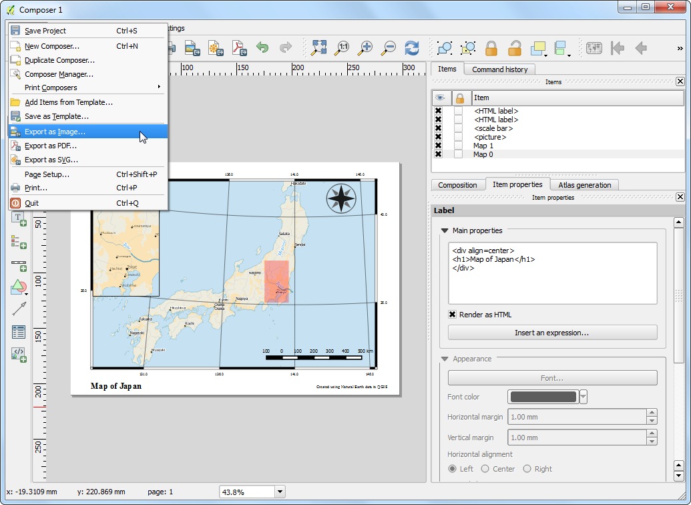
Збережіть зображення у потрібному вам форматі. Нижче показано результат збереження у форматі PNG.